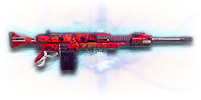

← Back to the T9A "Butcher" comparison
Sage Guide · Terran Republic · Heavy Assault · Directive Reward
The Terran Republic's directive LMG. You don't buy it — you earn it by auraxiuming five TR light machine guns — and the reward is a CARV that fires faster and never seems to run dry: 150 rounds in the drum, 600 in reserve.
The one-line verdict: the fastest-killing gun of its class, with the biggest magazine an LMG can carry — and the longest reload to match. It rewards burst discipline and punishes the mag dump like nothing else. Fight between 10 and 50 metres and it will carry you.

The T9A "Butcher" · Terran Republic · 150-round drum magazine · auraxium finish
Every enemy infantry has 1,000 health (500 shield + 500 health). Your bullet does 143 damage up close, fading to 112 at long range. Headshots count double, leg shots count less (×0.9). That gives you three numbers worth memorising:
| Range | Damage | Head | Chest | Legs | Chest vs shielded Heavy |
|---|---|---|---|---|---|
| Close · 0–10 m | 143 | 4 | 7 | 8 | 11 |
| Mid · 10–42 m | 143→125 | 4 | 8 | 9 | 12 |
| Far · 42–65 m+ | 125→112 | 5 | 9 | 10 | 13 |
Perfect-accuracy times to kill: 4 headshots ≈ 0.23 s, 7 chest shots ≈ 0.47 s up close. In real fights you'll land maybe half your rounds — still, this is why the head matters so much on this gun. (Shot counts use the damage at the far edge of each band, so the mid and far rows are the pessimistic ones — at 20 m you still kill in 8 chest shots, at 50 m in 9.)
Full power to 10 m, then a steady slide to minimum at 65 m. The gold line shows Soft Point Ammunition, which stretches full power to 15 m.
One gun, four fighting styles. The right technique changes with distance — use the range finder below to see what your bullets do at any range, then learn the four bands underneath it.
How to fight hereAim down sights at the upper chest and neck. Fire in bursts of 5 — your straight-up recoil climbs into the head for free damage.
Aim: centre of the chest, from the hip. Keep moving.
Scoping in costs you time and halves your move speed — at arm's length that gets you killed. The Butcher's hipfire is workable for an LMG: at 8 m the spread is about 0.56 m across, still covering the chest. Strafe side to side (A/D) while firing so you're hard to track, and let the overshield soak the return fire.
Aim: neck / upper chest. Bursts of 5–8 rounds.
This is where the gun earns its keep: full 143 damage, 769 RPM, fast handling. Start your crosshair at the neck — the straight-up climb walks your shots into the head, and 4 head hits end the fight in 0.23 s. Strafe while scoped; you're slower, but a moving target still beats a still one.
Aim: chest. Bursts of 5–8 rounds, pause between them.
Damage is sliding toward 125 and your cone of fire blooms if you hold the trigger. Fire a burst, release for a split second to let accuracy reset, fire again. The recoil climbs straight up (0° angle, no sideways drift), so pull your mouse gently down. Crouch or stand still when you can — both tighten your shots.
Aim: chest. Taps of 3–5 rounds at exposed targets only.
At 112 damage you need 9 chest shots — a long, loud advertisement of your position. Take these shots at stationary or fleeing targets, medics reviving, and engineers on turrets. Otherwise, your better play is to close the distance behind cover. Knowing when not to shoot is a skill too.
Your accuracy is decided by two things before skill even enters it: what your body is doing (your stance sets the starting cone of fire) and what your finger is doing (holding the trigger grows that cone with every shot). The Butcher has no fire-mode switch — full-auto only — so "firing modes" are something you do with your finger, not a setting on the gun.
| Stance | Starting cone | What it means for you |
|---|---|---|
| Sprinting | 7.0° | Maxed out — the widest the cone can be. Never start firing from a sprint. |
| Hipfire, moving | 4.5° | Walking or strafing from the hip. Fine inside ~8 m, leaks rounds past the target beyond it. |
| Hipfire, standing | 4.0° | Your point-blank default. The 0.56 m ring at 8 m in section 04 is this stance drawn out. |
| Hipfire, crouched | 3.5° | The tightest hipfire you have (4.0° if you crouch-walk). Crouch when holding a doorway from the hip. |
| Aimed (ADS), feet planted | 0.10° | Standing or crouched makes no difference here — forty times tighter than hipfire. |
| Aimed (ADS), strafing | 0.40° | Four times wider than planted (0.20° if you strafe crouched), and you move at half speed (0.5×). Strafe between bursts to stay hard to hit; plant your feet during each burst. |
| Mode | How your finger does it | Use it at |
|---|---|---|
| The mag dump | Hold the trigger and don't let go | Point blank only, or suppressing a doorway. Bloom maxes out fast — past ~8 rounds you're spraying, not aiming. |
| Bursts — the default | Hold for 5 rounds, release ~0.15 s, hold again. 6–8 rounds is fine while you're learning | Almost everything, 8–50 m. Each release resets the cone, so every burst starts at 0.03°. |
| Tap-fire | Short taps of 3–5, or single clicks, with a real pause between | 50 m and out, at exposed or stationary targets. Slow, but every round goes where the dot is. |
A target 30 m away, aiming down sights. Press and hold FIRE (mouse, touch, or hold Space with the button focused) and watch the holes walk wider the longer you hold — that's firing from an ever-growing cone. Release, let the cone reset, fire again. Aim for bursts of 5; 6–8 is tolerable while you're new. This practice window is shared by the whole Sage series: it's driven by a weapon profile plugged into the window — here the Butcher's (769 RPM, 0.10° starting cone, 0.05° bloom per shot, target at 30 m) — and the spread is drawn at true scale from those numbers.
Cone of fire — fills as you hold, empties when you release.
Your bursts will be graded here — green at 5 rounds, tolerable up to 8.
Some things are easier to show than to say. Here's what your bullets actually do: how wide hipfire spreads at 8 metres, what a good burst rhythm looks like, and what the 2x sight really changes. The hands-on version — holding the trigger yourself — is the practice window in section 03.
A full-size target 8 m away — an arm's-length room fight. The rings show where hipfire rounds land around your aim point (the chest). Sizes are drawn to scale from the gun's real cone-of-fire numbers.
Read it this way: standing still, the 0.56 m ring roughly covers the chest — most rounds hit a target this size, which is why hipfire works point-blank. But move and it grows to 0.63 m — wider than the torso — so the edge rounds start leaking past him, and the rings only grow with distance while the man doesn't. Past ~10 m that's rounds missing entirely: the exact moment to switch to aiming down sights, where the spread shrinks to a dot. Crouching tightens the standing ring to 0.49 m. (Ring sizes use the real geometry: spread diameter = 2 × distance × tan(cone ÷ 2).)
Every shot widens your cone of fire ("bloom"). Releasing the trigger for a heartbeat resets it. Same 18 rounds, two very different outcomes:
The target pattern is bursts of about 5 rounds — that's the ideal. Bursts of 6–8 are fine while you're new (call it newbie tolerance). Past that, the bloom (0.05° per shot aimed, 0.10° from the hip) keeps growing with every shot, so the extra bullets mostly decorate the wall behind your enemy instead of hitting him. Short bursts also leave you rounds for the second enemy — the magazine is 150, so you can afford them, but the 5.4 s reload still punishes an empty drum.
No zoom. The target at 35 m is small but the view is wide open — you see the crate, the tower, and the next enemy coming. Fast to aim, nothing blocks your edges. Best inside ~40 m.
Same target, same 35 m — but he looks twice as tall, so placing shots on his chest and head gets much easier. The price: your view narrows to the round window, the crate and tower are gone, and close targets feel fast and huge. Best at 25–50 m.
That's the whole 30-cert decision from section 05 in one picture: 1x for awareness, 2x for precision. Most veterans carry both and swap per base — indoors 1x, open ground 2x.
One thing first: the Butcher itself costs 0 certs — you can't buy it at all. It's the reward for completing the Master Light Machine Guns directive (auraxiuming five TR LMGs). The certs below are the only ones you'll ever spend on it, and the gun is fully usable with none of them. Buy in the order shown and stop whenever the gun feels right.
A clean red-dot sight with no zoom. Your default, and honestly your best all-round option.
Good: everywhere indoors and out to ~40 m — which is most PlanetSide fights.
Bad: picking out targets past 50 m; that's what the 2x is for.
Doubles your view magnification. Costs almost nothing — the price of a few kills.
Good: open-field bases, tower fights, and your 25–50 m burst game. Swap between 1x and 2x per fight.
Bad: tight indoor rooms — the zoom makes close targets feel fast and huge.
Night-vision sight: enemies glow white against a dark view, and it sees through smoke.
Good: night fights, smoky doorways, spotting infiltrators by their outline.
Bad: daytime and long range — its view is short-ranged and washes out in bright light.
DMO / HDS (3.4x) and TMS / ACS (4x) — sniper-style magnification on an automatic LMG.
Good: almost nothing a beginner does — recoil magnifies too, and tunnels your vision.
Bad: any fight inside 30 m, which is where you'll spend your first hundred hours.
The Butcher's recoil is already mild and straight up. Plenty of veterans run this slot empty forever — there is no compensator, suppressor or short barrel on this gun.
Good: your first weeks. Spend certs on your suit and shield first.
Bad: nothing — there's no downside to an empty slot.
Cuts vertical recoil by 30% (0.40° becomes 0.28° per shot). Costs you: hipfire spread grows 15%, and enemies see you on the minimap from 35 m farther away when you fire.
Good: if you mostly aim down sights at mid-range and the straight-up climb bothers you — the single biggest recoil cut in this slot.
Bad: hipfire builds and sneaky play — you get louder on the map and sloppier from the hip.
Your shots bloom 20% slower while aiming — longer accurate bursts. But you move 20% slower while scoped (0.5× becomes 0.4×).
Good: holding a lane or doorway at 25–50 m, firing from a steady position.
Bad: aggressive room-clearing — the slower scoped strafe makes you an easier target.
Hides your muzzle flash so your own view stays clear at night — but you appear on enemy minimaps from 15 m farther away.
Good: night fights where your own flash blinds you. A comfort pick, nothing more.
Bad: as an early purchase — it changes no fight outcome. Buy it last, if ever.
The first shot of each burst kicks 60% less — but side-to-side recoil rises 10% on everything. This one matters on the Butcher: its first-shot multiplier is 2.0×, so the opening kick is the biggest in the burst.
Good: disciplined burst and tap-fire at 25 m+, where every burst starts fresh.
Bad: long mag dumps — the sideways tax applies to every shot after the first, and that's where you live if you hold the trigger.
Hipfire accuracy improves by a third (33% tighter cone) — the 0.56 m ring at 8 m shrinks to about 0.37 m. Replaces the Angled Grip — you can't have both.
Good: indoor point-holds and stairwell fights where you hipfire inside 8 m.
Bad: open bases — you give up first-shot control for a bonus you rarely use.
Doubles the magazine to 300 rounds — the largest LMG magazine in the game. But the weapon takes 20% longer to equip and unequip (1.25 s becomes 1.50 s).
Good: sustained suppression, holding a lane alone, and fights where you genuinely can't stop to reload.
Bad: most play — 150 rounds is already more than two kills' worth, and the slower swap hurts when a fight surprises you.
A torch whose beam reveals cloaked infiltrators. Toggle it with the attachment key (X by default).
Good: hunting a stalker infiltrator camping your capture point — sweep corners with it.
Bad: as your everyday rail — it gives zero accuracy help, and the beam advertises your position.
Full 143 damage now reaches to 15 m instead of 10 m (the gold line on the chart above). Cost: bullets fly 10% slower (600 → 540 m/s).
Good: nearly always — most duels happen at 10–20 m, exactly where this extends your 7-shot kill.
Bad: long-range duels against runners, where the slower bullet needs more lead. A small price.
Bullets fly 10% faster (600 → 660 m/s) and minimum damage now holds to 85 m instead of 65 m — but full damage ends 2 m sooner (10 m becomes 8 m).
Good: open-field fights at 40 m+, where the faster bullet and longer falloff both pay.
Bad: close work — you shave 2 m off your best damage for speed you don't need indoors.
Leg shots stop being punished (×0.9 → ×1.2) — but headshots pay for it (×2 → ×1.5).
Good: almost nothing for a beginner — it only helps shots you should be avoiding.
Bad: any fight where you aim for the neck and head (habit 2): your 4-headshot kill becomes 5, and the headshot edge the gun's fire rate is built around gets taxed.
0 certs · Day one
What the directive hands you. Genuinely good — learn the gun on this before spending anything.
330 certs · Recommended
The best value in this whole guide. Covers every fight from a doorway to a tower courtyard.
130 certs · Indoor brawler
Built to hipfire down stairwells and hold a capture point room. Swap back to the All-Rounder outdoors.
330 certs · Lane holder
300 rounds in the drum, steadier aimed bursts, faster bullets for long lanes. Plant yourself, hold the lane, and let them come to you — just remember the 1.50 s swap.
Your overshield (F key) is extra health that only helps if it's on before the bullets arrive. Hear footsteps or expect a corner? Shield up, then peek. A shielded Heavy needs 11 chest shots to drop up close instead of 7 — that gap wins duels.
Headshots deal double damage: 4 kills up close versus 7 to the chest. Don't aim at the head directly — aim at the neck and let the gun's straight-up climb carry shots two and three into the skull. It's the single biggest damage upgrade you own, and it's free.
Every shot widens your cone of fire. Holding the trigger past ~8 rounds at range means later bullets fly around your target, not into it. Five rounds is the ideal burst; release the trigger for a heartbeat between bursts — your accuracy resets and your hits per magazine roughly double.
Reloading with even 1 bullet left takes 5.4 s; an empty gun takes 6.2 s — an eternity mid-fight. Count roughly: after two kills or ~100 rounds, duck behind cover and reload early. Treat the last 30 rounds as your emergency reserve, not your working magazine.
Walk with your crosshair at head height, pointed where an enemy's head will appear — a doorway edge, a corner, stairs. Most beginners lose fights in the half-second spent dragging the crosshair onto target. While firing, tap A/D to strafe: a moving Heavy is dramatically harder to headshot back.
Your damage, accuracy and shield all shine at close-mid range. Sprint between cover, use buildings and rocks as stepping stones, and arrive at your range before opening fire. The player who chooses the range usually wins the duel — make it you.
Every gun has a price. Here's where the Butcher pays — and the habit that covers each hole.
5.4 s with a round left, 6.2 s on empty — tied with its parent the CARV, and more than double the GD-22S's 2.3 s. Every reload is a decision, and a reload at the wrong moment is a death.
Play around it: reload early (habit 4) — never on empty, never in the open. The 150-round drum means you can afford to reload after every fight instead of every other one.
It takes 1.25 s to bring the Butcher up — 50 ms slower than the CARV it descends from, and far slower than the GD-22S's 0.8 s. A fight that surprises you with your rocket launcher out is already half lost.
Play around it: swap weapons behind cover, never in the open — and think twice before the Extended Magazine build, which stretches the swap to 1.50 s.
The first bullet jumps twice as far as the rest, and the recoil goes straight up (0°), so every burst starts with a hop. Hold the trigger and the climb keeps going — 0.40° per shot, recovered at only 12°/s.
Play around it: pull straight down as you fire — the climb is vertical, so the correction is too. The Angled Forward Grip cuts the first-shot jump by 60% if it still bothers you.
Tied with the CARV (600 m/s) and slower than the GD-22S (620 m/s), so you lead runners more than they do. Only the XMG-100 (500 m/s) and the Orion (540 m/s) are slower. Past 50 m the drop and the lead both start to matter.
Play around it: lead moving targets a touch more, and take High Velocity Ammunition (+10% velocity) for open-field fights.
Like all LMGs, you move at half speed while aiming down sights (0.5×) — and with the Heavy Barrel fitted it's 0.4×. A scoped Heavy is a slow target, and a slow target eats headshots.
Play around it: hipfire inside 8 m instead of scoping (that's the Point Hold build's whole idea), and strafe while scoped — you're slower, but a moving target still beats a still one.
Open the world map, travel to VR Training, and run these on the target dummies. Five minutes before a play session beats an hour of dying confused.
Aim at a wall 20 m away and empty a full magazine without touching the mouse. Watch the bullet pattern climb straight up — that's your gun's fingerprint. Repeat, this time pulling straight down, until the group stays fist-sized.
Walk the dummy range keeping your crosshair glued to neck height the whole time, snapping to each new target without dipping to the floor or sky. Slow and clean first; speed comes on its own.
At 30–40 m, kill dummies with bursts of 5–8, releasing the trigger fully between bursts. If a burst goes wide, shorten it. Goal: whole kills without a single wild round.
Pick a dummy, stand 5 m away, and circle it with A/D while hipfiring it down without stopping. This is your point-blank survival skill — the one that fires while your shield and movement do the defending.
Fire exactly 100 rounds, step behind a pillar, reload, repeat. Train your hands to reload early and only in cover until it's automatic — in real fights you'll do it without thinking, which is the point.